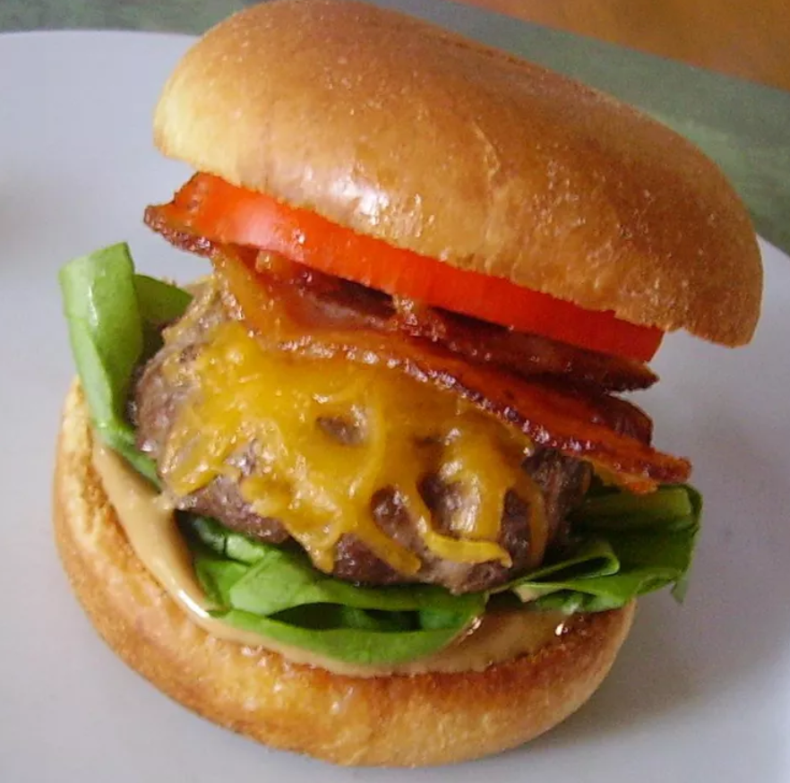

Peanut Butter Bacon Burger

Description
These ground sirloin hamburgers are topped with peanut butter, applewood-smoked bacon, and sharp Cheddar cheese, making them the best burgers around! Great ingredients make the best hamburger.
Ingredients
- 1 pound ground beef sirloin
- 1 teaspoon fresh ground black pepper
- ½ teaspoon onion powder
- ½ teaspoon garlic powder
- ½ teaspoon Worcestershire sauce
- ½ teaspoon kosher salt
- ¼ teaspoon cayenne pepper
- 8 slices applewood-smoked bacon
- 1 ½ cups shredded sharp Cheddar cheese
- 1 cup peanut butter
- 1 tablespoon maple syrup
- 6 hamburger buns
- 6 leaves lettuce
- 2 tomatoes, sliced
Steps
- Mix together ground beef, black pepper, onion powder, garlic powder, Worcestershire sauce, salt, and cayenne pepper in a large bowl until evenly blended. Form into six (4-inch-wide) patties and place on a large plate. Cover with plastic wrap and refrigerate until slightly firm, about 30 minutes.
- Preheat an outdoor grill for medium-high heat and lightly oil the grate.
- Place bacon in a large skillet over medium-high heat; cook, turning occasionally, until evenly browned, about 10 minutes. Drain bacon on a paper towel-lined plate and set aside.
- Cook patties on the preheated grill until hot and slightly pink in the center, about 4 minutes per side. An instant-read thermometer inserted into the center should read 140 degrees F (60 degrees C) for medium doneness. Sprinkle Cheddar cheese over patties about 1 minute before they are done.
- Mix together peanut butter and maple syrup in a microwave-safe bowl. Heat peanut butter mixture in the microwave until slightly runny, about 25 seconds. Stir until smooth.
- Spread peanut butter mixture over hamburger buns. Place patties, lettuce, tomatoes, and bacon on the bottoms, then cover with top buns.